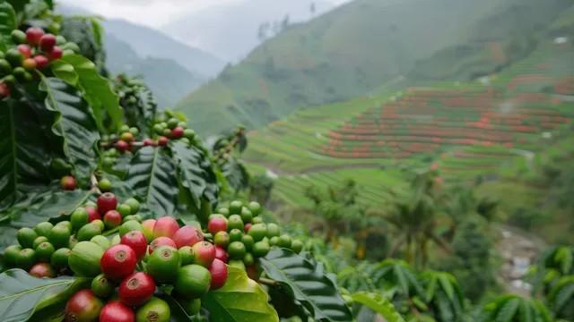
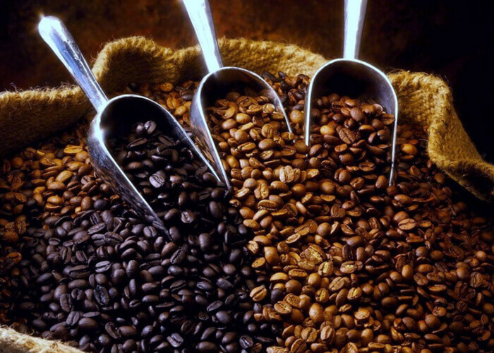

01
Authentic South Indian Profile
Bold, aromatic brew with a strong body and a traditional coffee–chicory balance for classic filter coffee lovers.
RICH · STRONG · AUTHENTIC
Authentic Coorg filter coffee decoction with the deep body and aroma of freshly brewed South Indian Kaapi — ready in seconds.
ORDER NOW — CASH ON DELIVERY →WHY SWARNASHRUNGA
Rich, traditional South Indian coffee designed for convenience without sacrificing authentic flavor.
Bold, aromatic brew with a strong body and a traditional coffee–chicory balance for classic filter coffee lovers.
Prepared in a controlled production setup to maintain consistent strength, aroma, flavor extraction and shelf life.
Skip the traditional filter setup. Mix the decoction with hot, frothy milk and sugar for an immediate cup.

SIMPLE RECIPE GUIDE
Use the decoction with boiled, frothy milk and sugar to create a rich cup without the wait.

FRESH DECOCTION PACKS
Factory-prepared and shipped fresh with Cash on Delivery across India.
STARTER PACK
Ideal for trying the authentic Coorg decoction taste.
VALUE TWIN PACK
Perfect for daily coffee lovers and small families.
FAMILY / COMMERCIAL
For coffee enthusiasts, offices and gatherings.

OUR ROOTS IN COORG
Coffee is nature's gift. The flavor and aroma depend on how the seeds are selected and blended.
Swarnashrunga selects AA-quality seeds for its coffee decoction preparation, described in the source material as premium and export quality.
“Respect the bean, and it will respect your cup.”
CRAFTED FOR THE AUTHENTIC CUP



OUR MASTER 80:20 FORMULA
We use 80% coffee and 20% chicory, a standard South Indian filter coffee blend designed for strong body, smoothness, and aroma.
Within the coffee portion, we blend 60% Arabica with 20% Robusta & Peaberry to create a rich and balanced profile.
THE COFFEE AD
Experience the rich Swarnashrunga filter coffee decoction and the traditional taste of Coorg coffee.
COMMON QUESTIONS
The source document states a shelf life of 35 days at room temperature.
Use 10–15 ml of decoction with 80–100 ml of boiled, frothy milk and 1–2 tsp of sugar to taste.
The blend uses 80% coffee and 20% chicory. The coffee portion includes 60% Arabica and 20% Robusta & Peaberry.
Yes. Cash on Delivery is available for orders.
CASH ON DELIVERY
Order Swarnashrunga Filter Coffee Decoction and pay when your order arrives.
CONTACT US
Have a question about Swarnashrunga Filter Coffee Decoction, your order, delivery, or bulk requirements? Reach us directly.
Hemmane, Shanivarsanthe Hobli,
Coorg District, Karnataka, India